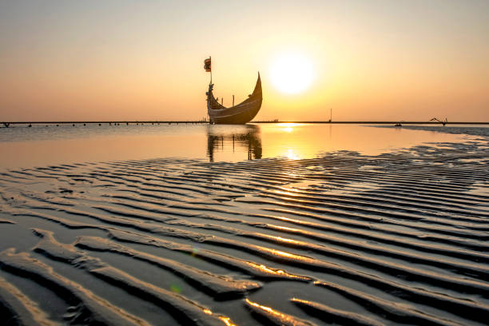

About the Destination

Cox's Bazar is one of the most popular tourist destinations in Bangladesh and is famous for having the world's longest natural uninterrupted sea beach, stretching for about 120 kilometers. Located along the Bay of Bengal, it attracts millions of visitors every year with its golden sandy beaches, clear blue water, and breathtaking sunsets. The peaceful environment and refreshing sea breeze make it an ideal place for relaxation and family vacations.
Besides its beautiful beach, Cox's Bazar offers many exciting attractions for travelers. Visitors can explore Himchari National Park, Inani Beach, and the nearby Saint Martin's Island, each known for its unique natural beauty. The town is also famous for its fresh seafood, local markets, and rich cultural heritage. Whether you enjoy nature, photography, adventure, or simply relaxing by the sea, Cox's Bazar provides an unforgettable travel experience for people of all ages.
Top Attractions
Cox's Bazar is home to many breathtaking attractions that draw visitors from around the world. From its world-famous sea beach to scenic hills, waterfalls, and nearby islands, the region offers something for every traveler. Visitors can enjoy natural beauty, adventure, local culture, and delicious seafood while exploring these remarkable destinations. Whether you are traveling with family, friends, or alone, the top attractions of Cox's Bazar promise an unforgettable experience.
Top 6 Attractions:
- Cox's Bazar Sea Beach
- Himchari National Park
- Inani Beach
- Saint Martin's Island
- Moheshkhali Island
- Radiant Fish world
Travel Media
Travel media helps people discover new destinations through photos, videos, blogs, and travel guides. It provides useful information about attractions, accommodation, transportation, local culture, and travel tips. Travel media inspires people to explore the world and plan memorable trips with confidence.
Location Map
The location map of Cox's Bazar helps visitors easily find this beautiful coastal destination in southeastern Bangladesh. It shows the city's position along the Bay of Bengal and provides directions to nearby attractions, hotels, beaches, and transportation routes, making travel more convenient and enjoyable.